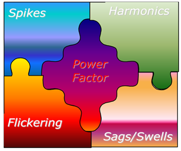

The widespread use of electronic equipment, such as information technology equipment, power electronics such as adjustable speed drives, programmable logic controllers, energy-efficient lighting, led to a complete change of electric loads nature. These loads are simultaneously the major causers and the major victims of power quality problems. Due to their non-linearity, all these loads cause disturbances in the voltage waveform.

Any operational problem in the network like tripping of switchgears, burning of electronic components or any other anomaly suspected may be due to poor power quality conditions. Our Energy experts and use of highly efficient power analyzer working together solve power quality issues and provide the best possible solutions along with their cost benefit analysis for rectifying the problem.
Power Quality Audit helps in
1. Study of power factor & harmonics, voltage & current transient, sags & swells.2. Investigation and resolution of power quality problems.
3. Power quality monitoring for compliance with standards and regulations including harmonic and flicker studies.
4. Interpretation and implementation of power quality standards.
5. Routine power quality monitoring.
6. Equipment power quality immunity(EMC) testing to national and international standards.
7. Power Quality solutions along with their cost benefit analysis for rectifying the problem.